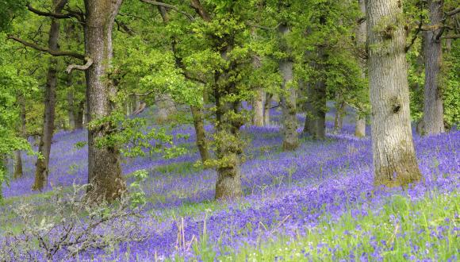

Woodland Habitat
Our native woodlands are one of the most characteristic elements of the Scottish landscape.
Coast and Seas
Wherever you are in Scotland, you’re never more than 65km from our dramatic, varied and highly productive coast and seas.

Urban Habitat
Urban greenspace and green networks support varied wildlife and give people ways to enjoy nature close to cities and towns.
Farmland and Croftland
Generations of farmers and crofters have helped create much of the variety and interest of Scotland’s landscapes, habitats and wildlife.

lochs, rivers and wetlands
High rainfall and a rugged, glaciated landscape make Scotland rich in freshwater and wetland habitats.
Mountains, heaths and bogs
Scotland’s mountains and moorlands, which cover about 60% of our land, form Britain’s largest remaining area of largely undeveloped wildlife habitat.